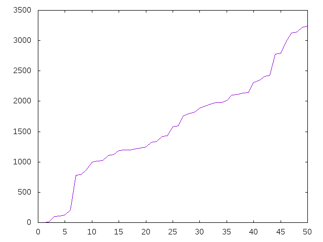

Números cubifinitos
El enunciado del problema Números cubifinitos de ¡Acepta el reto! es el siguiente
Se dice que un número es cubifinito cuando al elevar todos sus dígitos al cubo y sumarlos el resultado o bien es 1 o bien es un número cubifinito.
Por ejemplo, el número 1243 es cubifinito, pues al elevar todos sus dígitos al cubo obtenemos 100 que es cubifinito.
Por su parte, el 513 no es cubifinito, pues al elevar al cubo sus dígitos conseguimos el 153 que nunca podrá ser cubifinito, pues la suma de los cubos de sus dígitos vuelve a dar 153.
Definir las funciones
esCubifinito :: Int -> Bool grafica :: Int -> IO ()
tales que
- (esCubifinito n) se verifica si n es un número cubifinito. Por ejemplo,
esCubifinito 1 == True esCubifinito 10 == True esCubifinito 1243 == True esCubifinito 87418 == True esCubifinito 513 == False
- (grafica n) dibuja la gráfica de la sucesión de los primeros n números cubifinitos. Por ejemplo, al evaluar (grafica 50) se dibuja

Soluciones
import Graphics.Gnuplot.Simple esCubifinito :: Int -> Bool esCubifinito n = aux [n] where aux (n:ns) | n == 1 = True | n `elem` ns = False | otherwise = aux (sumaCubosDigitos n : n : ns) sumaCubosDigitos :: Int -> Int sumaCubosDigitos = sum . map (^3) . digitos digitos :: Int -> [Int] digitos n = [read [c] | c <- show n] grafica :: Int -> IO () grafica n = plotList [Key Nothing, PNG "Numeros_cubifinitos.png"] (zip [1..n] [x | x <- [1..], esCubifinito x])